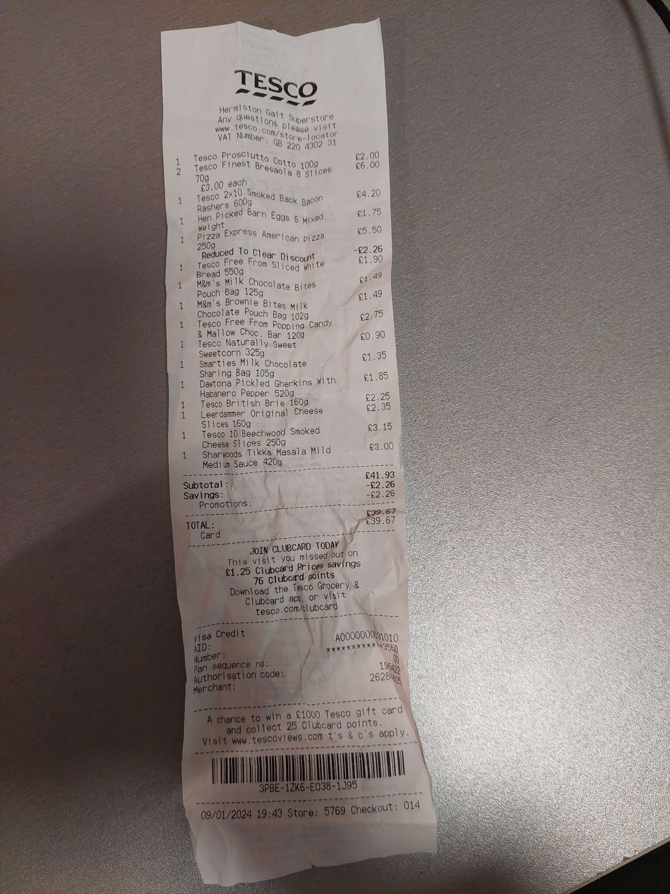

Bonjour vous !
Aujourd'hui je vais être concis:
D'abord, on a eu la suite des visios qui étaient toujours aussi peu intéressantes hormis pour celle parlant des activités extrascolaires. J'ai repéré quelques assos qui pourraient m'intéresser notamment une asso de jeux, une asso pokémon, plusieurs assos de robotique, une asso de cinéphiles, une asso de philosophie et une asso médiévale.
J'ai encore une fois fait les premières visios depuis mon lit. La dernière quant à elle je n'ai pas pu la faire la page ne chargeant pas mais, ayant toujours des problèmes après avoir vidé tous mes caches et redémarrés et ayant des problèmes aussi bien pour cette conf que je n'ai donc pas pu quivre que pour le formulaire pour donner et son avis et des problèmes jusqu'à github aussi, j'ai fini par me rendre compte que c'est l'extension de cybersécurité noscript que j'ai intallée entre temps qui bloquait tout ça.
J'ai pris le même petit déjeuner que la veille lors de la pause de midi et le soir j'ai mangé le steak acheté le premier jour et l'un des derniers sachets de pâtes (carbo en l'occurrence) déshydratées. Le steak ayant été décongelé dès le départ et devant théoriquement être consommé dans les 24H après 12H de décongelation (soit la veille) ou juste dans les 12H après le début de la décongélation je suis plus sûr, j'ai voulu le faire cuire fort et le résultat était plutôt bon mais mon poêlon de camping n'a pas beaucoup apprécié et a gardé quelques traces de brûlé (sans parler d'une légère déformation du fond du pôelon). De même, l'assiette de camping du steak (j'en avais deux j'ai mis le steak dans l'une et les pâtes dans l'autre) n'a pas beaucoup apprécié que je coupe ma viande (le couteau fonctionnait étonnament bien) et en garde aussi des traces. Je serai moins violent à l'avenir XD.
J'ai fait aujourd'hui deux sorties avec Cyril juste avant mon dîner: D'abord nous sommes allés faire un petit tour du campus puis nous sommes repassés par nos chambres respectives prendre chacun un sac pour aller au Tesco.
En effet, avec les suggestions de recette de mes amis la veille, je suis allé au Tesco m'acheter du jambon, du fromage, des oeufs et du pain de mie entre autres. J'en ai profité pour m'acheter quelques gourmandises.
Chose intéressante: sur mes deux sorties, j'ai croisé et abordé deux groupes de français qui globalement avaient tous un accès au discord et tous prévu d'aller au ping pong / pizza demain. Demain étant notre premier jour de repos, on verra bien ce que ça donne.
PS: Déjà pas mal des français ici ont commencé à cuisiner de façon un peu plus évoluée que juste des plats tous faits donc il est temps que je m'y mette même si mes affaires de camping ne rivalisent pas avec leurs vaisselles achetées sur place.
La facture du Tesco:
